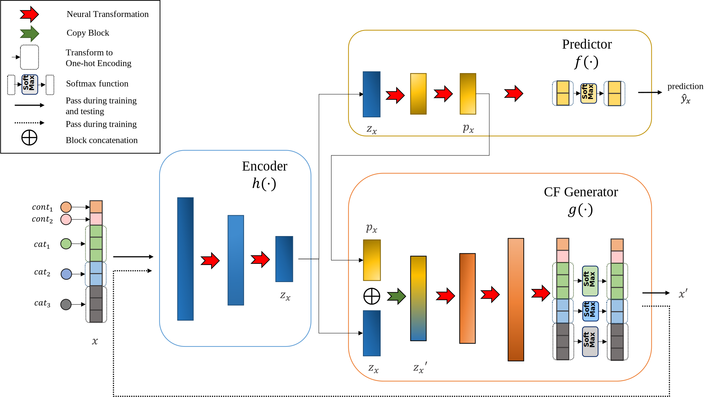

from relax.data_module import load_data
from copy import deepcopy
import chexCounterNet
A prediction-aware recourse model
CounterNet Model
relax.methods.counternet.CounterNetModel
class relax.methods.counternet.CounterNetModel (enc_sizes, dec_sizes, exp_sizes, dropout_rate, name=None)
CounterNet Model
Parameters:
- enc_sizes (
<class 'list'>) - dec_sizes (
<class 'list'>) - exp_sizes (
<class 'list'>) - dropout_rate (
<class 'float'>) - name (
<class 'str'>, default=None) – Name of the module.
CounterNet Training Module
Define the CounterNetTrainingModule for training CounterNetModel.
relax.methods.counternet.partition_trainable_params
relax.methods.counternet.partition_trainable_params (params, trainable_name)
relax.methods.counternet.CounterNetTrainingModule
class relax.methods.counternet.CounterNetTrainingModule
Helper class that provides a standard way to create an ABC using inheritance.
CounterNet Explanation Module

CounterNet consists of three objectives:
- predictive accuracy: the predictor network should output accurate predictions \hat{y}_x;
- counterfactual validity: CF examples x' produced by the CF generator network should be valid (e.g. \hat{y}_{x} + \hat{y}_{x'}=1);
- minimizing cost of change: minimal modifications should be required to change input instance x to CF example x'.
The objective function of CounterNet:
\operatorname*{argmin}_{\mathbf{\theta}} \frac{1}{N}\sum\nolimits_{i=1}^{N} \bigg[ \lambda_1 \cdot \! \underbrace{\left(y_i- \hat{y}_{x_i}\right)^2}_{\text{Prediction Loss}\ (\mathcal{L}_1)} + \;\lambda_2 \cdot \;\; \underbrace{\left(\hat{y}_{x_i}- \left(1 - \hat{y}_{x_i'}\right)\right)^2}_{\text{Validity Loss}\ (\mathcal{L}_2)} \,+ \;\lambda_3 \cdot \!\! \underbrace{\left(x_i- x'_i\right)^2}_{\text{Cost of change Loss}\ (\mathcal{L}_3)} \bigg]
CounterNet applies two-stage gradient updates to CounterNetModel for each training_step (see CounterNetTrainingModule).
- The first gradient update optimizes for predictive accuracy: \theta^{(1)} = \theta^{(0)} - \nabla_{\theta^{(0)}} (\lambda_1 \cdot \mathcal{L}_1).
- The second gradient update optimizes for generating CF explanation: \theta^{(2)}_g = \theta^{(1)}_g - \nabla_{\theta^{(1)}_g} (\mathcal \lambda_2 \cdot \mathcal{L}_2 + \lambda_3 \cdot \mathcal{L}_3)
The design choice of this optimizing procedure is made due to improved convergence of the model, and improved adversarial robustness of the predictor network. The CounterNet paper elaborates the design choices.
relax.methods.counternet.CounterNetConfig
class relax.methods.counternet.CounterNetConfig (enc_sizes=[50, 10], pred_sizes=[10], exp_sizes=[50, 50], dropout_rate=0.3, lr=0.003, lambda_1=1.0, lambda_2=0.2, lambda_3=0.1)
Configurator of CounterNet.
Parameters:
- enc_sizes (
List[int], default=[50, 10]) – Sequence of layer sizes for encoder network. - pred_sizes (
List[int], default=[10]) – Sequence of layer sizes for predictor. - exp_sizes (
List[int], default=[50, 50]) – Sequence of layer sizes for CF generator. - dropout_rate (
float, default=0.3) – Dropout rate. - lr (
float, default=0.003) – Learning rate for trainingCounterNet. - lambda_1 (
float, default=1.0) – \lambda_1 for balancing the prediction loss \mathcal{L}_1. - lambda_2 (
float, default=0.2) – \lambda_2 for balancing the prediction loss \mathcal{L}_2. - lambda_3 (
float, default=0.1) – \lambda_3 for balancing the prediction loss \mathcal{L}_3.
relax.methods.counternet.CounterNet
class relax.methods.counternet.CounterNet (config=None, cfnet_module=None, name=None)
API for CounterNet Explanation Module.
Methods
set_apply_constraints_fn (apply_constraints_fn)
set_compute_reg_loss_fn (compute_reg_loss_fn)
apply_constraints (*args, **kwargs)
compute_reg_loss (*args, **kwargs)
save (path)
load_from_path (path)
before_generate_cf (*args, **kwargs)
generate_cf (*args, **kwargs)
Basic usage of CounterNet
Prepare data:
dm = load_data("adult", data_configs=dict(sample_frac=0.1))Define CounterNet:
counternet = CounterNet()assert isinstance(counternet, ParametricCFModule)
assert isinstance(counternet, CFModule)
assert isinstance(counternet, PredFnMixedin)
assert hasattr(counternet, 'pred_fn')
assert counternet.module is None
assert counternet.is_trained is False
assert not hasattr(counternet, 'params')Train the model:
counternet.train(dm, epochs=1, batch_size=128)
assert counternet.is_trained is True
assert hasattr(counternet, 'params')
params = deepcopy(counternet.params)Predict labels
xs, y = dm['test']
y_pred = counternet.pred_fn(xs)
assert y_pred.shape == (len(y), 2)Generate a CF explanation for a given x.
cf = counternet.generate_cf(xs[0])
assert xs[0].shape == cf.shape
assert cf.shape == (29,)Generate CF explanations for given x.
cfs = vmap(counternet.generate_cf)(xs)
assert xs.shape == cfs.shape